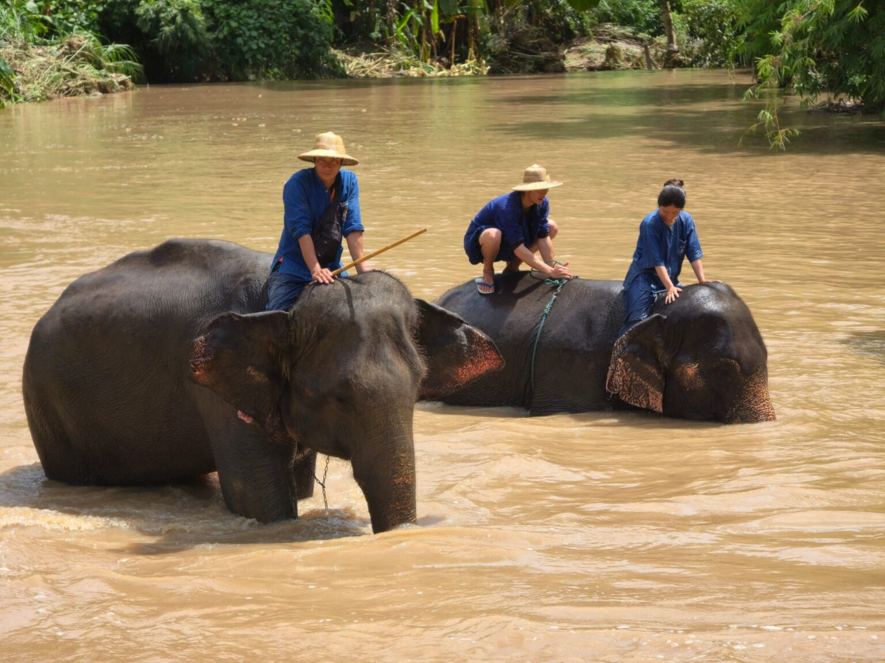

เกี่ยวกับศูนย์อนุรักษ์ช้างไทย
ศูนย์อนุรักษ์ช้างไทย (Thai Elephant Conservation Center - TECC) เป็นศูนย์อนุรักษ์ช้างแห่งชาติที่ใหญ่ที่สุดในประเทศไทย ก่อตั้งขึ้นในปี พ.ศ. 2536
ศูนย์แห่งนี้มีภารกิจในการอนุรักษ์ ดูแล รักษา และศึกษาวิจัยเกี่ยวกับช้างไทย รวมถึงการให้ความรู้แก่ประชาชน เป็นแหล่งเรียนรู้สำคัญสำหรับผู้ที่สนใจเกี่ยวกับช้างไทย

🐘 กิจกรรมที่น่าสนใจ
- ชมการแสดงของช้างไทย
- เยี่ยมชมโรงพยาบาลช้าง
- ชมโรงเรียนฝึกช้างและควาญช้าง
- ร่วมกิจกรรมอาบน้ำช้าง
- ให้อาหารช้าง
- พิพิธภัณฑ์ช้างไทย
โปรแกรมท่องเที่ยวแนะนำ

🎭 โปรแกรมชมการแสดงช้าง
ระยะเวลา: 2–3 ชั่วโมง
- ชมการแสดงความสามารถของช้าง
- เรียนรู้ประวัติและความสำคัญของช้างไทย
- ถ่ายภาพกับช้าง
- ให้อาหารช้าง
ราคา: 200–300 บาท
🛁 โปรแกรมอาบน้ำช้าง
ระยะเวลา: ครึ่งวัน (4–5 ชั่วโมง)
- เรียนรู้การดูแลช้าง
- ให้อาหารช้าง
- อาบน้ำช้างในแม่น้ำ
- เดินเล่นกับช้างในธรรมชาติ
- รวมอาหารกลางวัน
ราคา: 1,500–2,000 บาท


ข้อมูลสำหรับผู้เข้าชม
📍 ที่อยู่: ตำบลห้างฉัตร อำเภอห้างฉัตร จังหวัดลำปาง
⏰ เวลาเปิด: ทุกวัน 08:00–17:00 น.
💰 ค่าเข้าชม: 50 บาท (ไม่รวมกิจกรรม)
🚗 การเดินทาง: ห่างจากตัวเมืองลำปางประมาณ 37 กม. ใช้เวลาประมาณ 45 นาที
👕 การเตรียมตัว: สวมเสื้อผ้าสบาย เตรียมเสื้อผ้าสำรองสำหรับกิจกรรมอาบน้ำช้าง
💡 เคล็ดลับการเยี่ยมชม
- ควรมาช่วงเช้าเพื่อหลีกเลี่ยงแดดแรง
- ปฏิบัติตามคำแนะนำของเจ้าหน้าที่
- รักษาความสะอาดและสิ่งแวดล้อม
- ควรจองกิจกรรมล่วงหน้าในวันหยุด
บรรยากาศศูนย์อนุรักษ์ช้างไทย